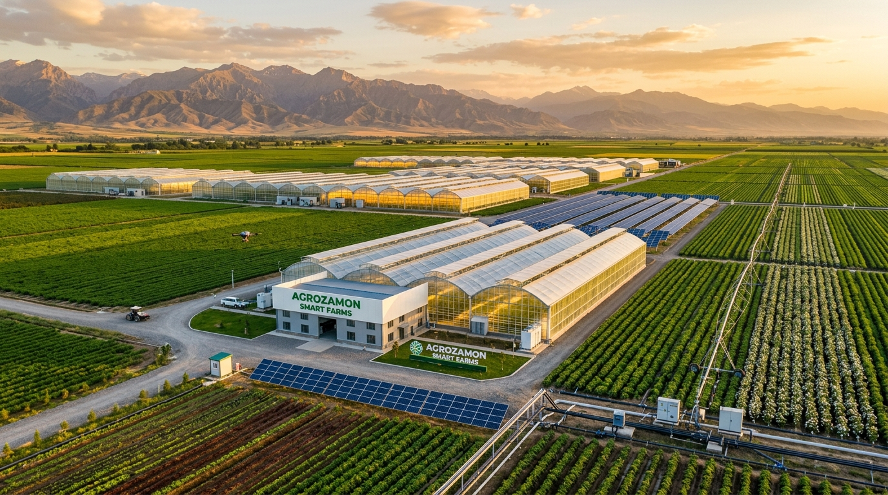

Sanoatlashgan intensiv bog‘lar
Hududlarning iqlim va suv imkoniyatidan kelib chiqib yangi avlod bog‘larini barpo etish.
Farmon matniSanoat usulidagi intensiv mevali bog‘larni barpo etish, eskirgan bog‘larni yangilash va suv tejovchi texnologiyalarni keng joriy etishning yangi bosqichi.
O'zbekiston Respublikasi Prezidentining tegishli Farmon va Qarorlari asosida agrosanoat majmuini rivojlantirish bo'yicha islohotlar
Agrosanoatni rivojlantirish agentligi respublikamizda intensiv bog'dorchilik, uzumchilik, issiqxona xo'jaliklarini barqaror rivojlantirish hamda resurs-tejamkor texnologiyalarni (tomchilatib va yomg'irlatib sug'orish) keng joriy etish mas'ul davlat organidir.

Agentlik tomonidan amalga oshirilayotgan asosiy strategik yo‘nalishlar va ularning rasmiy resurslari.
Hududlarning iqlim va suv imkoniyatidan kelib chiqib yangi avlod bog‘larini barpo etish.
Farmon matniFermer va tashabbuskorlarga kredit, subsidiya hamda loyiha ko‘magini taqdim etish.
Ariza platformasiTomchilatib va yomg‘irlatib sug‘orishni ishlab chiqarish maydonlariga keng joriy qilish.
Huquqiy asoslarMahsulotni saralash, saqlash, qayta ishlash va xalqaro bozorlarga olib chiqish.
So‘nggi natijalarDavlat xizmatlarini shaffof ko'rsatish va qishloq xo'jaligi yerlarini monitoring qilish raqamli tizimlari
Respublikadagi intensiv bog'lar va issiqxonalarni kosmik monitoring hamda geolokatsiya orqali xaritalashtirish tizimi.
Fermer xo'jaliklari va klasterlar uchun subsidiyalar olish bo'yicha Yagona Interaktiv portalga to'g'ridan-to'g'ri integratsiya.
Qishloq xo'jaligi yerlarini ochiq va shaffof elektron auksion orqali ijaraga berishning yagona davlat raqamli platformasi.
Agrosanoat sohasiga oid so'nggi Qarorlar, Farmonlar va rasmiy brifing xabarlari
Rasmiy axborot kanali
Barcha rasmiy yangiliklar, brifinglar va media materiallari.
Barcha yangiliklarDavlat organi faoliyatiga oid ochiq ma’lumotlar, hujjatlar va aloqa kanallari.